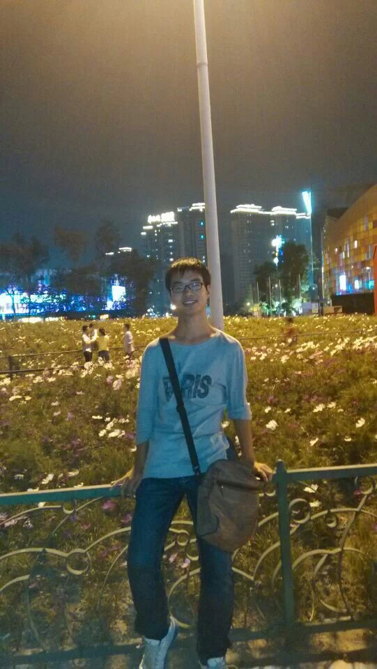

|  |
Wenjie Huang / 黄文杰Postgraduate Student @ UESTC 在读研究生 电子科技大学 计算机学院 My GitHub HomePage School of Computer Science and Engineering University of Electronic Science and Technology of China (UESTC) Email: wenjie [at] mobinets.org Address: Room B1-705-2, Main Building, UESTC (Qingshuihe), Chengdu, China |
[Biography] [Experiences]
He received a bachelor's degree in Automation engineering from Chongqing University of Posts and Telecommunications.He is currently a M.S. student in UESTC. His research interests focus on Low Power Wide Area Network(LPWAN). He is a member of MOBINETS lab.